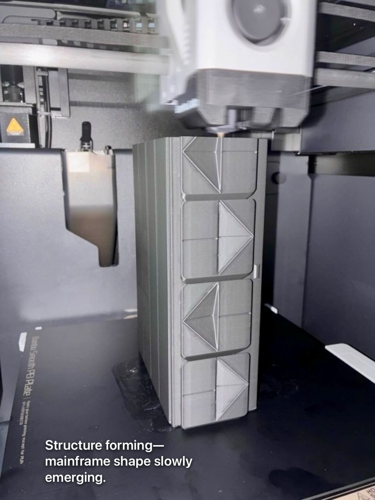
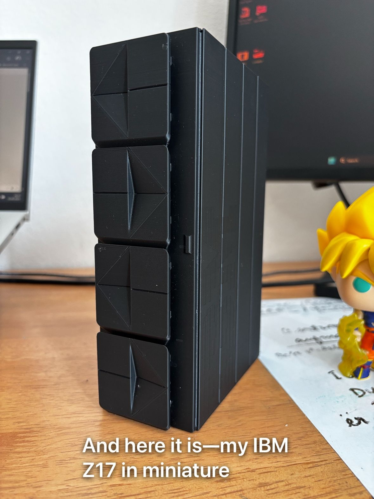
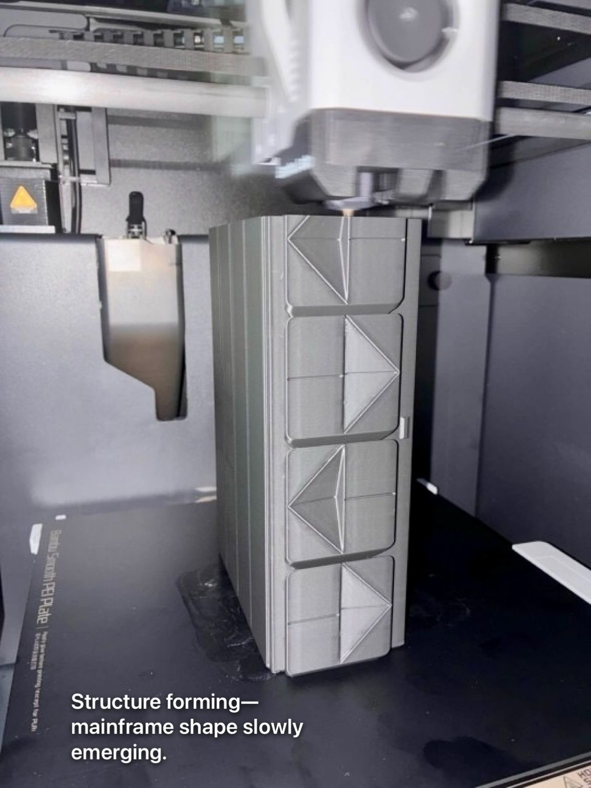
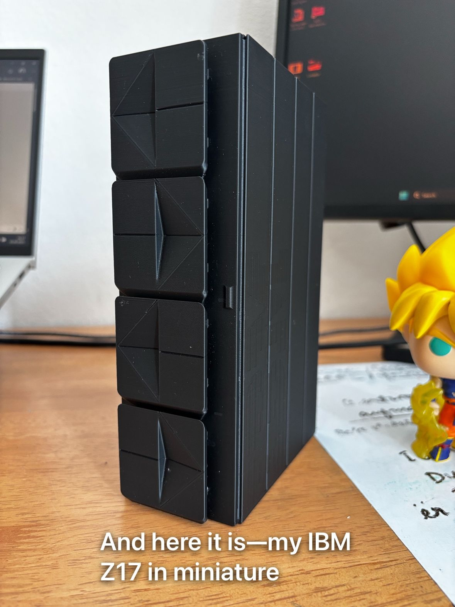

3D Printed IBM z17 Mainframe
Bringing the latest mainframe technology into the physical world through 3D printing.
 




A detailed 1:32 scale model of IBM's latest z17 mainframe, bringing together my professional expertise and hobby interests. This project combines precise technical specifications with the art of 3D printing.
Project Highlights
- Accurate representation of z17's unique design features
- Custom modifications for printability while maintaining detail
- Multi-part assembly for better print quality
- Detailed surface texturing and panel lines